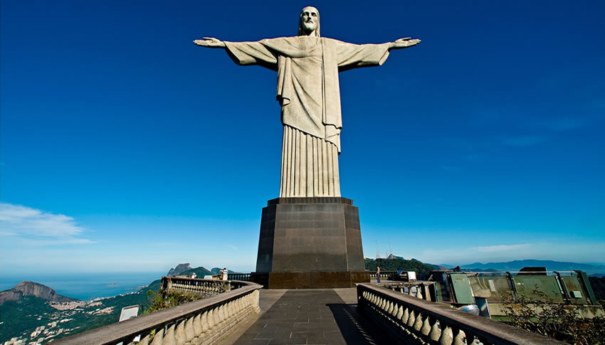
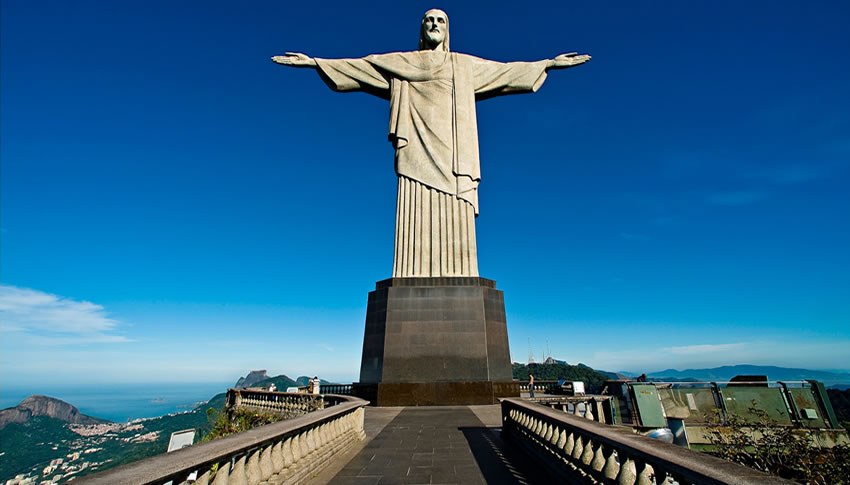

Christ The Redeemer
 
{kind=link}
Towering 2,310 feet above the city of Rio, the Christ the Redeemer statue has fascinated experts and historians for nearly a hundred years. It’s the fourth largest statue of Jesus Christ in the world, the largest Art Deco-style sculpture on the planet. Perched on the summit of Mount Corcovado in Rio,the statue stands at a whopping 98 feet (or 30 metres) tall (making it two-thirds the height of New York’s Statue of Liberty), and its outstretched arms reach to 92 feet (or 28 metres) horizontally.Not only is the statue the most recognizable landmark of Rio, it’s become a cultural icon of Brazil as well. But most importantly, however, the statue has become a global symbol of Christianity that attracts millions of believers and non-believers to the top of Mount Corcovado every year.
The best way to get to the location of Christ the Redeemer is to book a flight in Manila Airport to Rio De Janeiro- Galeao. This cost roughly around PHP 33,099-PHP 78,982 with a an eta of 28 hours and 10 minutes. After that you book a taxi costing roughly around PHP 500 - 600.
Ipanema Beach
{kind=link}
Another place to visit in rio is Ipanema Beach. Birthplace of the famous song Garota de Ipanema or Girl from Ipanema, the Ipanema Beach is the perfect place to relax and enjoy Rio. Even more irresistible than the muse that inspired the song Girl from Ipanema, by Vinícius de Moraes and Tom Jobim, Ipanema is a famous meeting point in Rio de Janeiro. The high-end district is the perfect combination of beaches, bars and stores, as well as a buoyant nightlife. The beach stretches for 2 km between Jardim de Alah and Arpoador, which is known for a big stone separating it from the Copacabana Beach. Its beaches and waters are used to practice several different sports, such as footvolley, paddleball, surfing and kitesurfing. Station 9 is famous for gathering young crowds in a laid-back atmosphere. The Sun setting behind the Dois Irmãos Hill is so beautiful that it is always greeted with applause by people at the beach. Arpoador is the best spot to see the sunset.